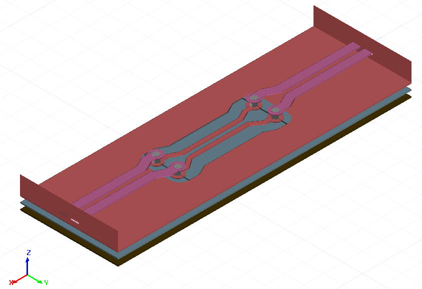
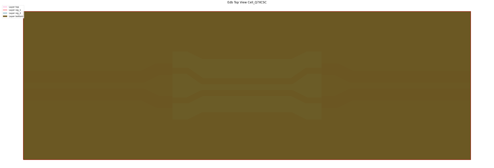
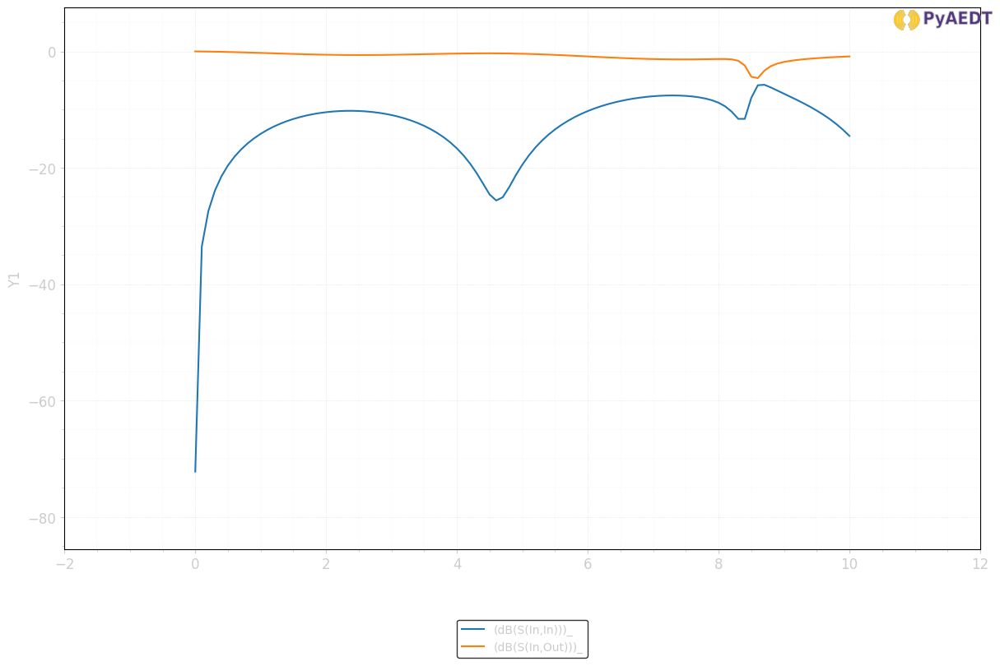
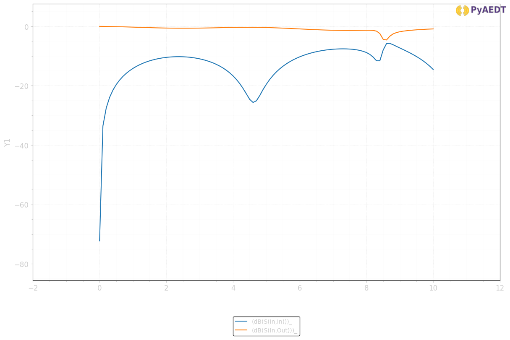

Download this example
Download this example as a Jupyter Notebook or as a Python script.
Pre-layout Parameterized PCB#
This example shows how to use the EDB interface along with HFSS 3D Layout to create and solve a parameterized layout. The layout shows a differential via transition on a printed circuit board with back-to-back microstrip to stripline transitions. The model is fully parameterized to enable investigation of the transition performance on the many degrees of freedom.
The resulting model is shown below

Preparation#
Import the required packages
[1]:
import os
import tempfile
import time
from ansys.aedt.core import Hfss3dLayout
from pyedb import Edb
Define constants#
[2]:
AEDT_VERSION = "2025.2"
NUM_CORES = 4
NG_MODE = False # Open AEDT UI when it is launched.
Launch EDB#
[3]:
temp_folder = tempfile.TemporaryDirectory(suffix=".ansys")
aedb_path = os.path.join(temp_folder.name, "pcb.aedb")
edb = Edb(edbpath=aedb_path, version=AEDT_VERSION)
PyEDB INFO: Star initializing Edb 08:04:42.918713
PyEDB INFO: Edb version 2025.2
PyEDB INFO: Logger is initialized. Log file is saved to C:\Users\ansys\AppData\Local\Temp\pyedb_ansys.log.
PyEDB INFO: legacy v0.71.0
PyEDB INFO: Python version 3.10.11 (tags/v3.10.11:7d4cc5a, Apr 5 2023, 00:38:17) [MSC v.1929 64 bit (AMD64)]
PyEDB INFO: create_edb completed in 8.7779 seconds.
PyEDB INFO: EDB C:\Users\ansys\AppData\Local\Temp\tmpdtdqd8t7.ansys\pcb.aedb created correctly.
PyEDB INFO: EDB initialization completed in 8.8889 seconds.
Create layout#
Define the parameters.#
[4]:
params = {
"$ms_width": "0.4mm",
"$sl_width": "0.2mm",
"$ms_spacing": "0.2mm",
"$sl_spacing": "0.1mm",
"$via_spacing": "0.5mm",
"$via_diam": "0.3mm",
"$pad_diam": "0.6mm",
"$anti_pad_diam": "0.7mm",
"$pcb_len": "15mm",
"$pcb_w": "5mm",
"$x_size": "1.2mm",
"$y_size": "1mm",
"$corner_rad": "0.5mm",
}
for par_name in params:
edb.add_project_variable(par_name, params[par_name])
Create stackup#
Define the stackup layers from bottom to top.
[5]:
layers = [
{
"name": "bottom",
"layer_type": "signal",
"thickness": "35um",
"material": "copper",
},
{
"name": "diel_3",
"layer_type": "dielectric",
"thickness": "275um",
"material": "FR4_epoxy",
},
{
"name": "sig_2",
"layer_type": "signal",
"thickness": "35um",
"material": "copper",
},
{
"name": "diel_2",
"layer_type": "dielectric",
"thickness": "275um",
"material": "FR4_epoxy",
},
{
"name": "sig_1",
"layer_type": "signal",
"thickness": "35um",
"material": "copper",
},
{
"name": "diel_1",
"layer_type": "dielectric",
"thickness": "275um",
"material": "FR4_epoxy",
},
{"name": "top", "layer_type": "signal", "thickness": "35um", "material": "copper"},
]
Define the bottom layer
[6]:
prev = None
for layer in layers:
edb.stackup.add_layer(
layer["name"],
base_layer=prev,
layer_type=layer["layer_type"],
thickness=layer["thickness"],
material=layer["material"],
)
prev = layer["name"]
Create a parametrized padstack for the signal via.#
Create a padstack definition.
[7]:
signal_via_padstack = "automated_via"
edb.padstacks.create(
padstackname=signal_via_padstack,
holediam="$via_diam",
paddiam="$pad_diam",
antipaddiam="",
antipad_shape="Bullet",
x_size="$x_size",
y_size="$y_size",
corner_radius="$corner_rad",
start_layer=layers[-1]["name"],
stop_layer=layers[-3]["name"],
)
PyEDB INFO: Padstack automated_via create correctly
[7]:
'automated_via'
Assign net names. There are only two signal nets.
[8]:
net_p = "p"
net_n = "n"
Place the signal vias.
[9]:
edb.padstacks.place(
position=["$pcb_len/3", "($ms_width+$ms_spacing+$via_spacing)/2"],
definition_name=signal_via_padstack,
net_name=net_p,
via_name="",
rotation=90.0,
)
[9]:
<pyedb.dotnet.database.edb_data.padstacks_data.EDBPadstackInstance at 0x29583abd9f0>
[10]:
edb.padstacks.place(
position=["2*$pcb_len/3", "($ms_width+$ms_spacing+$via_spacing)/2"],
definition_name=signal_via_padstack,
net_name=net_p,
via_name="",
rotation=90.0,
)
[10]:
<pyedb.dotnet.database.edb_data.padstacks_data.EDBPadstackInstance at 0x2958626a170>
[11]:
edb.padstacks.place(
position=["$pcb_len/3", "-($ms_width+$ms_spacing+$via_spacing)/2"],
definition_name=signal_via_padstack,
net_name=net_n,
via_name="",
rotation=-90.0,
)
[11]:
<pyedb.dotnet.database.edb_data.padstacks_data.EDBPadstackInstance at 0x2958626a080>
[12]:
edb.padstacks.place(
position=["2*$pcb_len/3", "-($ms_width+$ms_spacing+$via_spacing)/2"],
definition_name=signal_via_padstack,
net_name=net_n,
via_name="",
rotation=-90.0,
)
[12]:
<pyedb.dotnet.database.edb_data.padstacks_data.EDBPadstackInstance at 0x29586269b40>
Draw parametrized traces#
Trace width and the routing (Microstrip-Stripline-Microstrip). Applies to both p and n nets.
[13]:
# Trace width, n and p
width = ["$ms_width", "$sl_width", "$ms_width"]
# Routing layer, n and p
route_layer = [layers[-1]["name"], layers[4]["name"], layers[-1]["name"]]
Define points for three traces in the “p” net
[14]:
points_p = [
[
["0.0", "($ms_width+$ms_spacing)/2"],
["$pcb_len/3-2*$via_spacing", "($ms_width+$ms_spacing)/2"],
["$pcb_len/3-$via_spacing", "($ms_width+$ms_spacing+$via_spacing)/2"],
["$pcb_len/3", "($ms_width+$ms_spacing+$via_spacing)/2"],
],
[
["$pcb_len/3", "($ms_width+$sl_spacing+$via_spacing)/2"],
["$pcb_len/3+$via_spacing", "($ms_width+$sl_spacing+$via_spacing)/2"],
["$pcb_len/3+2*$via_spacing", "($sl_width+$sl_spacing)/2"],
["2*$pcb_len/3-2*$via_spacing", "($sl_width+$sl_spacing)/2"],
["2*$pcb_len/3-$via_spacing", "($ms_width+$sl_spacing+$via_spacing)/2"],
["2*$pcb_len/3", "($ms_width+$sl_spacing+$via_spacing)/2"],
],
[
["2*$pcb_len/3", "($ms_width+$ms_spacing+$via_spacing)/2"],
["2*$pcb_len/3+$via_spacing", "($ms_width+$ms_spacing+$via_spacing)/2"],
["2*$pcb_len/3+2*$via_spacing", "($ms_width+$ms_spacing)/2"],
["$pcb_len", "($ms_width+$ms_spacing)/2"],
],
]
Define points for three traces in the “n” net
[15]:
points_n = [
[
["0.0", "-($ms_width+$ms_spacing)/2"],
["$pcb_len/3-2*$via_spacing", "-($ms_width+$ms_spacing)/2"],
["$pcb_len/3-$via_spacing", "-($ms_width+$ms_spacing+$via_spacing)/2"],
["$pcb_len/3", "-($ms_width+$ms_spacing+$via_spacing)/2"],
],
[
["$pcb_len/3", "-($ms_width+$sl_spacing+$via_spacing)/2"],
["$pcb_len/3+$via_spacing", "-($ms_width+$sl_spacing+$via_spacing)/2"],
["$pcb_len/3+2*$via_spacing", "-($ms_width+$sl_spacing)/2"],
["2*$pcb_len/3-2*$via_spacing", "-($ms_width+$sl_spacing)/2"],
["2*$pcb_len/3-$via_spacing", "-($ms_width+$sl_spacing+$via_spacing)/2"],
["2*$pcb_len/3", "-($ms_width+$sl_spacing+$via_spacing)/2"],
],
[
["2*$pcb_len/3", "-($ms_width+$ms_spacing+$via_spacing)/2"],
["2*$pcb_len/3 + $via_spacing", "-($ms_width+$ms_spacing+$via_spacing)/2"],
["2*$pcb_len/3 + 2*$via_spacing", "-($ms_width+$ms_spacing)/2"],
["$pcb_len", "-($ms_width + $ms_spacing)/2"],
],
]
Add traces to the EDB.
[16]:
trace_p = []
trace_n = []
for n in range(len(points_p)):
trace_p.append(edb.modeler.create_trace(points_p[n], route_layer[n], width[n], net_p, "Flat", "Flat"))
trace_n.append(edb.modeler.create_trace(points_n[n], route_layer[n], width[n], net_n, "Flat", "Flat"))
Create the wave ports
[17]:
edb.hfss.create_differential_wave_port(
trace_p[0].id,
["0.0", "($ms_width+$ms_spacing)/2"],
trace_n[0].id,
["0.0", "-($ms_width+$ms_spacing)/2"],
"wave_port_1",
)
edb.hfss.create_differential_wave_port(
trace_p[2].id,
["$pcb_len", "($ms_width+$ms_spacing)/2"],
trace_n[2].id,
["$pcb_len", "-($ms_width + $ms_spacing)/2"],
"wave_port_2",
)
C:\Users\ansys\AppData\Local\Temp\ipykernel_7400\2406493680.py:1: DeprecationWarning: Call to deprecated function create_differential_wave_port. use excitation_manager.create_differential_wave_port method instead.
edb.hfss.create_differential_wave_port(
C:\Users\ansys\AppData\Local\Temp\ipykernel_7400\2406493680.py:8: DeprecationWarning: Call to deprecated function create_differential_wave_port. use excitation_manager.create_differential_wave_port method instead.
edb.hfss.create_differential_wave_port(
[17]:
('wave_port_2',
<pyedb.dotnet.database.edb_data.ports.BundleWavePort at 0x2958626a6b0>)
Draw a conducting rectangle on the the ground layers.
[18]:
gnd_poly = [
[0.0, "-$pcb_w/2"],
["$pcb_len", "-$pcb_w/2"],
["$pcb_len", "$pcb_w/2"],
[0.0, "$pcb_w/2"],
]
gnd_shape = edb.modeler.Shape("polygon", points=gnd_poly)
Void in ground for traces on the signal routing layer
[19]:
void_poly = [
[
"$pcb_len/3",
"-($ms_width+$ms_spacing+$via_spacing+$anti_pad_diam)/2-$via_spacing/2",
],
[
"$pcb_len/3 + $via_spacing",
"-($ms_width+$ms_spacing+$via_spacing+$anti_pad_diam)/2-$via_spacing/2",
],
[
"$pcb_len/3 + 2*$via_spacing",
"-($ms_width+$ms_spacing+$via_spacing+$anti_pad_diam)/2",
],
[
"2*$pcb_len/3 - 2*$via_spacing",
"-($ms_width+$ms_spacing+$via_spacing+$anti_pad_diam)/2",
],
[
"2*$pcb_len/3 - $via_spacing",
"-($ms_width+$ms_spacing+$via_spacing+$anti_pad_diam)/2-$via_spacing/2",
],
[
"2*$pcb_len/3",
"-($ms_width+$ms_spacing+$via_spacing+$anti_pad_diam)/2-$via_spacing/2",
],
[
"2*$pcb_len/3",
"($ms_width+$ms_spacing+$via_spacing+$anti_pad_diam)/2+$via_spacing/2",
],
[
"2*$pcb_len/3 - $via_spacing",
"($ms_width+$ms_spacing+$via_spacing+$anti_pad_diam)/2+$via_spacing/2",
],
[
"2*$pcb_len/3 - 2*$via_spacing",
"($ms_width+$ms_spacing+$via_spacing+$anti_pad_diam)/2",
],
[
"$pcb_len/3 + 2*$via_spacing",
"($ms_width+$ms_spacing+$via_spacing+$anti_pad_diam)/2",
],
[
"$pcb_len/3 + $via_spacing",
"($ms_width+$ms_spacing+$via_spacing+$anti_pad_diam)/2+$via_spacing/2",
],
[
"$pcb_len/3",
"($ms_width+$ms_spacing+$via_spacing+$anti_pad_diam)/2+$via_spacing/2",
],
["$pcb_len/3", "($ms_width+$ms_spacing+$via_spacing+$anti_pad_diam)/2"],
]
void_shape = edb.modeler.Shape("polygon", points=void_poly)
Add ground conductors.
[20]:
for layer in layers[:-1:2]:
# add void if the layer is the signal routing layer.
void = [void_shape] if layer["name"] == route_layer[1] else []
edb.modeler.create_polygon(main_shape=gnd_shape, layer_name=layer["name"], voids=void, net_name="gnd")
C:\actions-runner\_work\pyaedt-examples\pyaedt-examples\.venv\lib\site-packages\pyedb\misc\decorators.py:115: UserWarning: Argument `main_shape` is deprecated for method `create_polygon`; use `points` instead.
warnings.warn(
Plot the layout.
[21]:
edb.nets.plot(None)

PyEDB INFO: Plot Generation time 0.854
[21]:
(<Figure size 6000x3000 with 1 Axes>,
<Axes: title={'center': 'Edb Top View Cell_Q7XCSC'}>)
Save the EDB.
[22]:
edb.save_edb()
edb.close_edb()
PyEDB INFO: Save Edb file completed in 0.0000 seconds.
PyEDB INFO: Close Edb file completed in 0.0242 seconds.
C:\Users\ansys\AppData\Local\Temp\ipykernel_7400\2450071995.py:1: DeprecationWarning: Call to deprecated function save_edb. use save method instead.
edb.save_edb()
C:\Users\ansys\AppData\Local\Temp\ipykernel_7400\2450071995.py:2: DeprecationWarning: Call to deprecated function close_edb. use close method instead.
edb.close_edb()
[22]:
True
Open the project in HFSS 3D Layout.#
[23]:
h3d = Hfss3dLayout(
project=aedb_path,
version=AEDT_VERSION,
non_graphical=NG_MODE,
new_desktop=True,
)
PyAEDT INFO: Python version 3.10.11 (tags/v3.10.11:7d4cc5a, Apr 5 2023, 00:38:17) [MSC v.1929 64 bit (AMD64)].
PyAEDT INFO: PyAEDT version 0.26.dev0.
PyAEDT INFO: Initializing new Desktop session.
PyAEDT INFO: AEDT version 2025.2.
PyAEDT INFO: New AEDT session is starting on gRPC port 55830.
PyAEDT INFO: Starting new AEDT gRPC session on port 55830.
PyAEDT INFO: Launching AEDT server with gRPC transport mode: wnua
PyAEDT INFO: Electronics Desktop started on gRPC port 55830 after 11.0 seconds.
PyAEDT INFO: AEDT installation Path C:\Program Files\ANSYS Inc\v252\AnsysEM
PyAEDT INFO: Connected to AEDT gRPC session on port 55830.
PyAEDT WARNING: Service Pack is not detected. PyAEDT is currently connecting in Insecure Mode.
PyAEDT WARNING: Please download and install latest Service Pack to use connect to AEDT in Secure Mode.
PyAEDT INFO: EDB folder C:\Users\ansys\AppData\Local\Temp\tmpdtdqd8t7.ansys\pcb.aedb has been imported to project pcb
PyAEDT INFO: Active Design set to 0;Cell_Q7XCSC
PyAEDT INFO: AEDT objects correctly read
Add a HFSS simulation setup#
[24]:
setup = h3d.create_setup()
setup.props["AdaptiveSettings"]["SingleFrequencyDataList"]["AdaptiveFrequencyData"]["MaxPasses"] = 3
h3d.create_linear_count_sweep(
setup=setup.name,
unit="GHz",
start_frequency=0,
stop_frequency=10,
num_of_freq_points=101,
name="sweep1",
sweep_type="Interpolating",
interpolation_tol_percent=1,
interpolation_max_solutions=255,
save_fields=False,
use_q3d_for_dc=False,
)
PyAEDT INFO: Parsing C:\Users\ansys\AppData\Local\Temp\tmpdtdqd8t7.ansys\pcb.aedt.
PyAEDT INFO: File C:\Users\ansys\AppData\Local\Temp\tmpdtdqd8t7.ansys\pcb.aedt correctly loaded. Elapsed time: 0m 0sec
PyAEDT INFO: aedt file load time 0.02639484405517578
PyAEDT INFO: Linear count sweep sweep1 has been correctly created.
[24]:
MySetupAuto : sweep1
Define the differential pairs to used to calculate differential and common mode s-parameters#
[25]:
h3d.set_differential_pair(differential_mode="In", assignment="wave_port_1:T1", reference="wave_port_1:T2")
h3d.set_differential_pair(differential_mode="Out", assignment="wave_port_2:T1", reference="wave_port_2:T2")
[25]:
True
Solve the project.
[26]:
h3d.analyze(cores=NUM_CORES)
PyAEDT INFO: Project pcb Saved correctly
PyAEDT INFO: Key Desktop/ActiveDSOConfigurations/HFSS 3D Layout Design correctly changed.
PyAEDT INFO: Solving all design setups. Analysis started...
PyAEDT INFO: Design setup None solved correctly in 0.0h 2.0m 18.0s
PyAEDT INFO: Key Desktop/ActiveDSOConfigurations/HFSS 3D Layout Design correctly changed.
[26]:
True
Plot the results and shut down AEDT.
[27]:
solutions = h3d.post.get_solution_data(expressions=["dB(S(In,In))", "dB(S(In,Out))"], context="Differential Pairs")
solutions.plot()
PyAEDT INFO: Parsing C:\Users\ansys\AppData\Local\Temp\tmpdtdqd8t7.ansys\pcb.aedt.
PyAEDT INFO: File C:\Users\ansys\AppData\Local\Temp\tmpdtdqd8t7.ansys\pcb.aedt correctly loaded. Elapsed time: 0m 0sec
PyAEDT INFO: aedt file load time 0.035889625549316406
PyAEDT INFO: PostProcessor class has been initialized! Elapsed time: 0m 0sec
PyAEDT INFO: Post class has been initialized! Elapsed time: 0m 0sec
PyAEDT INFO: Loading Modeler.
PyAEDT INFO: Modeler loaded.
PyAEDT INFO: Modeler class has been initialized! Elapsed time: 0m 0sec
PyAEDT INFO: No EDB gRPC setting provided. Disabling gRPC for EDB.
PyAEDT INFO: Loading EDB with Dotnet enabled.
PyEDB INFO: Star initializing Edb 08:07:51.347048
PyEDB INFO: Edb version 2025.2
PyEDB INFO: Logger is initialized. Log file is saved to C:\Users\ansys\AppData\Local\Temp\pyedb_ansys.log.
PyEDB INFO: legacy v0.71.0
PyEDB INFO: Python version 3.10.11 (tags/v3.10.11:7d4cc5a, Apr 5 2023, 00:38:17) [MSC v.1929 64 bit (AMD64)]
PyEDB INFO: Database pcb.aedb Opened in 2025.2
PyEDB INFO: Cell Cell_Q7XCSC Opened
PyEDB INFO: Builder was initialized.
PyEDB INFO: open_edb completed in 0.0376 seconds.
PyEDB INFO: EDB initialization completed in 0.0458 seconds.
PyAEDT INFO: Solution Correctly loaded. Elapsed time: 0m 0sec
PyAEDT INFO: Solution Correctly parsed. Elapsed time: 0m 0sec
[27]:


Release AEDT#
[28]:
h3d.save_project()
h3d.release_desktop()
# Wait 3 seconds to allow AEDT to shut down before cleaning the temporary directory.
time.sleep(3)
PyAEDT INFO: Project pcb Saved correctly
PyAEDT INFO: Desktop has been released and closed.
Note that the ground nets are only connected to each other due to the wave ports. The problem with poor grounding can be seen in the S-parameters. This example can be downloaded as a Jupyter Notebook, so you can modify it. Try changing parameters or adding ground vias to improve performance.
The final cell cleans up the temporary directory, removing all files.
[29]:
temp_folder.cleanup()
Download this example
Download this example as a Jupyter Notebook or as a Python script.